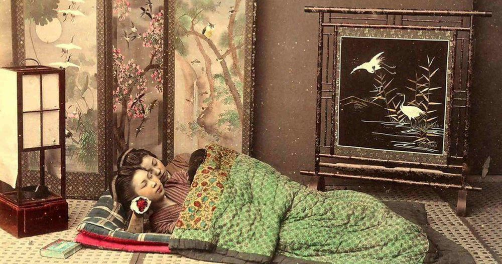
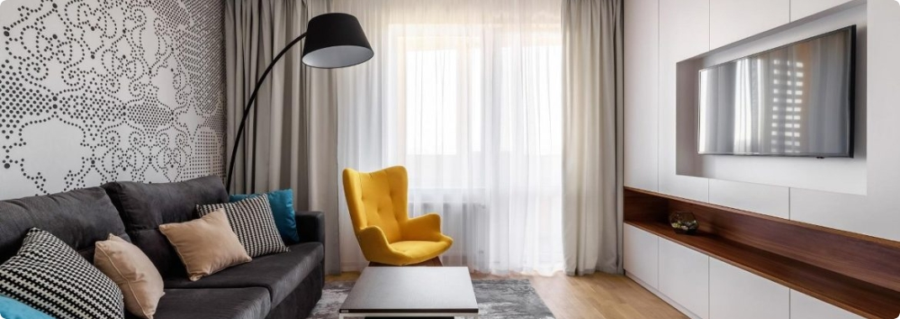

Еволюція ліжка
Археологічні розкопки свідчать, що перші ліжка, знайдені 77 000 років тому, не надто сильно відрізняються від тих, в яких ми спимо сьогодні. Принцип облаштування спального місця був таким самим. Про це говорять наукові дослідження професора Йоганнесбурзького університету. Перші зразки ліжок були площею два квадратних метри і 30 см у товщину. Зазвичай їх сплітали з очерету і покривали шаром листя. Саме листя використовували для відлякування комах.
З плином часу ліжка змінювалися, ставали вищими, аби уберігати наші тіла від вогкості та інших незручностей ночівлі на підлозі. Але значна частина людства, проте, і через 77 тисяч років еволюції, як і раніше, страждає від безсоння через незручне ліжко або неприйнятні умови для сну. Мабуть, у цій важливій сфері людського життя сталася лише одна революція — у XVII столітті, коли під спальні почали відводити спеціальні кімнати.
У міру того, як змінювалися конструкція і дизайн європейських будинків, спальня теж зазнавала змін. Більше стала цінуватися приватність, і досягти її ставало простіше.
- Раніше було модним розташовувати кімнати вдома за принципом анфілади, але з часом, коли особистий простір почав цінуватися більше за інші переваги планування, такий тип приміщення став непопулярним, адже в такому будинку усамітнитися було просто неможливо — всі спальні були прохідними, і навіть королі й королеви шукали приватності, завішуючи свої ліжка балдахінами.
- Століттями життя людини проходило у всіх на очах: буддистські або християнські монахи спали в загальних дорміторіях, а в Європі епоха великих будинків з анфіладами кімнат зробила популярними величезні ліжка, в яких могли ночувати відразу кілька людей. Такий тип ложе називався "уерське ліжко". Воно було таким великим, що на ньому могло легко поміститися до восьми осіб.
- Поки в будинки не прийшли такі блага цивілізації, як водопровід і каналізація, спальні століттями слугували не тільки для сну, але і були місцем для купання і догляду за собою.
- У традиційних японських будинках минулих століть дуже популярними були пересувні ширми і футони, які використовували для швидкої трансформації простору — з кабінету в спальню, зі спальні у вітальню і так далі.
Ще одним етапом розвитку ліжок стала знакова подія у 1968 році, коли Чарльз Прайор Холл, аспірант університету Сан-Франциско, винайшов водяне ліжко. На початку 1970-х він запатентував свій винахід, і водяні ліжка міцно влаштувалися у спальнях американців. На піку своєї популярності, в 1987 році, вони окупували 22 % американського ринку ліжок.
На Заході особиста спальня поступово перетворилася в один з центрів сімейного життя: для дітей це ігрова кімната, для підлітків — місце, де можна сховатися від батьківського контролю, для деяких дорослих — робочий кабінет.У будинках заможних людей вона часто нагадує номер у дорогому готелі: тут і власна ванна, і телевізор на пів стіни, і приглушене освітлення, і розкішні покривала на ліжку, і безліч усіляких гаджетів. Якщо говорити про майбутнє наших спалень, то їх концепція передбачає самостійне автоматичне очищення матраців, біометричні сенсори і голографічні системи розваг. Однак для нашого сну сучасні технології — це палиця з двома кінцями. З одного боку, умови для сну стають дедалі комфортнішими, ліжка все м'якшими. З іншого — ми все більше не висипаємося, не в змозі відірватися від смартфонів, які супроводжують нас всюди, зокрема в ліжку.
Як правильно обрати ліжко?
При виборі ліжка в інтернет магазині Вам в першу чергу потрібно вибрати матеріал. Найбільшою популярністю користуються дерев'яні ліжка, виготовлені з вільхи, ясена чи дуба. Такі моделі чудово прикрасять Вашу спальню у квартирі чи приватному будинку. Для орендованих квартир, під здачу, більше підійде ліжко з металу, так як воно просто «не вбивається», а також має дуже демократичну ціну.
Для Вашої зручності ліжко може комплектуватись висувними ящиками або підйомним механізмом. Ящики можуть бути з одного боку ліжка або з двох. Також є моделі, з висувними ящиками спереду. Ліжка з підйомним механізмом, це відмінне рішення, для невеликих кімнат, вони дозволяють заощадити простір і мають велику нішу для зберігання постільної білизни. Всі дерев'яні ліжка комплектуються буковими ламелями. Спальне місце з ламельною основою може витримувати навантаження до 150 кг на одне спальне місце. Відстань між ламелями, у своїй має бути 2,5-3 див.
Кожне ліжко може бути забарвлене у різні кольори: чорні, білі, сірі, венге, у кольорі горіх. Завдяки цьому ліжко можна підібрати під будь-який інтер'єр
Оформлення вітальні. Які м'які меблі краще вибрати?
Вітальня – це основна кімната у кожному будинку. Саме вона служить для прийому гостей, проведення часу всією сім'єю та просто для відпочинку у приємній теплій атмосфері. Оформляючи свій будинок та вітальню зокрема, всі намагаються зробити її максимально зручною, комфортною та красивою. Основним та центральним елементом оформлення вітальні, як і будь-якої іншої кімнати, є м'які меблі.
Будь-які меблі для вітальні повинні бути не тільки стильними і красивими, але і функціональними. На таких меблів має бути зручно та приємно відпочивати та приймати гостей. Однак сьогодні існує величезна різноманітність найрізноманітніших м'яких меблів для вітальні, яка підходить для кімнат різних розмірів і форм. На чому варто зупинити свій вибір? Як краще оформити свою вітальню, щоб вам було комфортно, а гості хотіли приходити до вас знову та знову?
На сайті інтернет магазину Кровато представлено велику різноманітність м'яких меблів для вітальні, серед яких кожен зможе вибрати для себе найбільш вдалий варіант. У нас ви знайдете:
- Прямі дивани. Такі дивани вважаються класикою. Вони підходять для віталень будь-яких форм та розмірів. Прямий диван виглядає стильно та лаконічно, на ньому зручно відпочивати, приймати гостей або навіть спати. Прямі дивани можуть стояти біля стіни, так і в центрі кімнати. Багато моделей прямих диванів легко розкладаються, перетворюючись на повноцінне спальне місце. Також більшість диванів мають великі та місткі ніші, які є додатковим місцем для зберігання;
- Кутові дивани Кутові дивани вважаються найзручнішими та комфортнішими. Вони ідеально підійдуть для приємного проведення часу в колі сім'ї або друзів. Кутові дивани в основному використовуються для оформлення великих віталень, так як вони займають багато місця, і для кімнат з невеликою площею просто не підійдуть;
- Тахти. Тахта - це одна з варіацій дивана, але стильніша і мінімалістична. Виглядають тахти дуже незвично і можуть підійти для будь-якого інтер'єру. Також тахти більше ніж звичайні дивани підходять для сну, оскільки в їх основі не пружинні блоки, а дерев'яні ламелі або ортопедичні матраци;
- Крісла. Крісло – це особливий предмет інтер'єру. Сучасні дизайнери не часто використовують його, вважаючи застарілим, проте саме крісла створюють особливий затишок та комфорт у будь-якій кімнаті. Сьогодні існує величезна різноманітність класичних та сучасних моделей крісел, що дозволяє кожному відшукати ідеальне крісло для свого будинку;
- Набір меблів. Комплект м'яких меблів – це відмінне рішення для тих, хто хоче меблювати свою вітальню не лише диваном, а й кріслами. Існують набори з одним або двома кріслами, із прямими або кутовими диванами. Основна перевага будь-якого готового меблевого гарнітура – це те, що предмети меблів у ньому ідеально поєднуються один з одним, і вам не потрібно буде витрачати свій час та сили на їхній підбір.
Підбір м'яких меблів для вітальні – це заняття непросте. Однак при виборі та покупці меблів для своєї вітальні пам'ятайте, що якісні м'які меблі повинні бути не тільки красивими, але й зручними для вас і всіх мешканців вашого будинку.